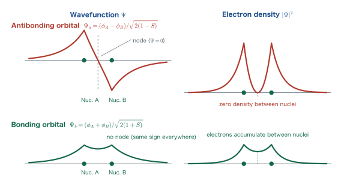
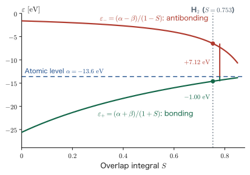
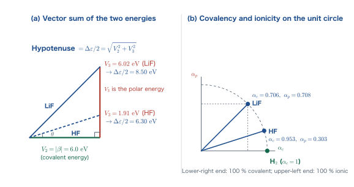

Chapter 11The Secular Equation and the Covalent Bond
Through Chapter 10, we went through the whole task of “numerically computing the total energy of a molecule.” If we throw a molecule into Molcalc or PySCF, the orbital energies, the wave functions, and the vibrational frequencies all come out. But staring at the resulting list of numbers cannot answer the question of why two atoms bind together. In this chapter we go in the opposite direction. We prepare just two atomic orbitals and, using only the variational principle (Chapter 3) and Lagrange's method of undetermined multipliers (Appendix A), build the smallest model that can be solved with pencil and paper. What emerges as a consequence is the secular equation, and from it the bonding and antibonding orbitals, and the continuous connection between the covalent and the ionic bond, follow with surprising ease. The two formulas $\varepsilon_{\pm}=(\alpha\pm\beta)/(1\pm S)$ derived in this chapter are the foundation for everything that follows: Chapter 12 (symmetry), Chapter 13 (the Madelung energy), and Chapter 14 (the bands of ionic crystals). We also confirm here, in equations, the fact that the covalent bond arises from the quantum-mechanical circumstance that “we cannot tell where an electron came from.”
- That the identity of particles (particles of the same kind cannot be distinguished in principle) is the origin of the covalent bond
- Three integrals: the definitions and signs of the overlap integral $S$, the Coulomb integrals $\alpha_A,\alpha_B$, and the resonance integral $\beta$
- Computing the numerator and the denominator of the energy expectation value for the LCAO trial function $\Psi=c_A\phi_A+c_B\phi_B$
- Minimization under the normalization condition → Lagrange's method of undetermined multipliers → simultaneous equations in matrix form → the secular equation
- The solution $\varepsilon_{\pm}=\dfrac{\alpha\pm\beta}{1\pm S}$ for homonuclear diatomic molecules, and the important fact that the antibonding orbital rises more than the bonding orbital falls (the ratio is $(1+S)/(1-S)$)
- Why the He$_2$ molecule does not exist, and what can be read from the energy gap $\Delta\varepsilon=2(S\alpha-\beta)/(1-S^2)$
- For heteronuclear diatomic molecules: the covalent energy $V_2$, the polar energy $V_3$, the covalency $\alpha_c$, and the ionicity $\alpha_p$ (Harrison's definitions)
- That a 100% ionic bond does not exist in principle, and that a 100% covalent bond is limited to homonuclear diatomic molecules
11.1 The Covalent Bond Is a Quantum-Mechanical Effect
11.1.1 That figure that has appeared twice already
We have already seen the same figure twice in this book. It shows that when two hydrogen atoms are brought close together, the two 1s orbitals mix, producing two molecular orbitals: a bonding orbital and an antibonding orbital. It appeared in Chapter 2 as a prelude to the discussion of the periodic table, and in Chapter 10 when we read the results of the Molcalc calculation. The same figure keeps reappearing because it is a direct picture of the essence of the covalent bond.
Until now we have asked you to accept it as “that is just how it is.” The purpose of this chapter is to derive this figure from equations. All the necessary tools are already in hand: the variational principle of Chapter 3, the overlap integral of Chapter 5, and Lagrange's method of undetermined multipliers from Appendix A. Just by combining these three, the bonding and antibonding orbitals come out automatically.
11.1.2 Identity of particles
When a covalent bond forms, two electrons occupy the bonding orbital. Of these two, which is the electron that came from atom A, and which is the electron that came from atom B?
The answer is “that question is meaningless.”
Principle: Identity of particles
In microscopic systems, two particles of the same kind are essentially indistinguishable. It is impossible in principle to write numbers on the electrons and track them afterward. Therefore the statement “electron 1 comes from A and electron 2 comes from B” has no physically verifiable meaning.
We used the same principle when we introduced the Slater determinant in Chapter 7. There it appeared as antisymmetry: “the sign of the wave function changes when two electrons are exchanged.” In this chapter it acts in a more elementary form. Namely, the existence probability of an electron may spread over both the A side and the B side.
Why? Why do we gain when electrons cannot be told apart?
For classical particles, the picture is fixed: electron 1 moves around nucleus A, and electron 2 moves around nucleus B. In this case electron 1 can fully feel only the Coulomb attraction of nucleus A. But if the electrons cannot be distinguished and are allowed to be “present” near both A and B at the same time, then the same single electron can receive the attraction of both nuclei at once. When an electron spreads over a region containing two nuclei, the well of the attractive potential becomes deeper. The energy falls. This is the covalent bond.
To borrow Prof. Mochizuki's expression, particles seem to love “hide-and-seek.” The system is more stable when the particle leaves it unclear where it is. In this chapter we confirm this seemingly strange circumstance with equations.
11.1.3 Bonding is impossible if “you can tell where it came from”
Let us consider the converse. Suppose that, for some reason, it were settled that “this electron definitely belongs to atom B.” What would happen? The electron exists only around B, so it cannot receive the attraction of nucleus A. The energy does not fall. That is, no covalent bond forms.
This is the limit of the ionic bond. As we will see in Section 11.9, in this limit the energies of the molecular orbitals remain exactly equal to those of the atomic orbitals, with not even 1 eV of stabilization. “we can tell where the electron came from” and “no covalent bond forms” are two sides of the same state of affairs.
That said, in real materials neither a pure covalent bond nor a pure ionic bond exists, and the two are connected continuously. The tools for quantifying this “degree of connection” are the covalency $\alpha_c$ and the ionicity $\alpha_p$, introduced in Section 11.8. Since this is a story that is hard to accept in words alone, from here on we pursue it with equations from the start.
11.2 Three Integrals — Overlap, Coulomb, and Resonance Integrals
11.2.1 Setup and the Hamiltonian
As in Figure 11.1, consider a system in which nucleus A and nucleus B are held fixed a distance $R$ apart. By the Born–Oppenheimer approximation (Chapter 8), the motion of the nuclei can be separated from that of the electrons, and the internuclear distance $R$ can be treated as a mere parameter. The Hamiltonian of a single electron moving in the field created by these nuclei is, in SI units,
$$ \begin{equation} \Ham = -\frac{\hbar^2}{2m}\nabla^2 \;-\; \frac{\ee^2}{4\pi\eps r_A} \;-\; \frac{\ee^2}{4\pi\eps r_B} \label{eq:11-hamiltonian} \end{equation} $$The first term is the kinetic energy, the second term is the Coulomb attraction from nucleus A, and the third term is the Coulomb attraction from nucleus B. The repulsion between the nuclei, $\ee^2/(4\pi\eps R)$, is a constant that does not depend on the electron coordinates, so we omit it for now and add it back when we discuss the total energy.
Write one atomic orbital of atom A as $\phi_A(\bm{r})$ and that of atom B as $\phi_B(\bm{r})$. For the hydrogen molecule, both are 1s orbitals,
$$ \phi_{1s}(r)=\frac{1}{\sqrt{\pi a_0^3}}\,e^{-r/a_0},\qquad a_0=\frac{\eps h^2}{\pi m \ee^2}=0.529\times10^{-10}\ \mathrm{m} $$We may assume that $\phi_A$ and $\phi_B$ are each normalized on their own ($\int\abs{\phi_A}^2\dd^3r=1$). In what follows we take them to be real functions (1s orbitals are real functions).
11.2.2 The overlap integral $S$
Definition: Overlap integral
The overlap integral of two atomic orbitals $\phi_A$ and $\phi_B$ is defined as
$$ \begin{equation} S \;=\; \braket{\phi_A|\phi_B} \;=\; \iiint \phi_A^{*}(\bm{r})\,\phi_B(\bm{r})\,\dd x\,\dd y\,\dd z \label{eq:11-overlap-def} \end{equation} $$$S$ is a dimensionless quantity that expresses how much the two orbitals overlap in space.
The range of values of $S$ follows immediately from the Schwarz inequality (Appendix A). Since $\abs{\braket{\phi_A|\phi_B}}^2 \le \braket{\phi_A|\phi_A}\braket{\phi_B|\phi_B} = 1$, we have $\abs{S}\le 1$. For two 1s orbitals of the same sign, the integrand is positive everywhere, so $S\gt 0$; that is,
$$ 0 \le S \le 1 $$As $R\to\infty$, $S\to0$ (the orbitals do not overlap at all), and as $R\to0$, $S\to1$ (the two orbitals coincide completely).
In Chapter 5 we computed the overlap integral between 1s orbitals analytically using elliptical coordinates (prolate spheroidal coordinates) and obtained the result
$$ \begin{equation} S(R)=\left(1+\frac{R}{a_0}+\frac{1}{3}\frac{R^2}{a_0^2}\right)e^{-R/a_0} \label{eq:11-overlap-1s} \end{equation} $$We will use this expression many times in this chapter as a numerical example.
Example 11.1: The overlap integral of the hydrogen molecule
The equilibrium internuclear distance of the hydrogen molecule H$_2$ is $R=1.40\,a_0=0.741\times10^{-10}\ \mathrm{m}$. Find $S$ from Eq. \eqref{eq:11-overlap-1s}.
Solution. Substitute $x\equiv R/a_0=1.40$. First, evaluating the quantity in parentheses gives
$$ 1+x+\frac{x^2}{3}=1+1.40+\frac{1.96}{3}=1+1.40+0.65333=3.05333 . $$Next, the exponential function is $e^{-1.40}=0.246597$. Therefore
$$ S=3.05333\times0.246597=0.75294\simeq 0.753 . $$This is a fairly large overlap. Because the value is close to 1, the small number $1-S=0.247$ will appear in the denominators of later expressions. This fact leads to the conclusion in Section 11.6 that “the antibonding orbital rises substantially.”
11.2.3 The Coulomb integral $\alpha$ (the atomic level)
Definition: Coulomb integral
For each atomic orbital, the expectation value of the Hamiltonian \eqref{eq:11-hamiltonian},
$$ \begin{equation} \alpha_A=\braket{\phi_A|\Ham|\phi_A}=\iiint \phi_A^{*}\,\Ham\,\phi_A\,\dd x\,\dd y\,\dd z,\qquad \alpha_B=\braket{\phi_B|\Ham|\phi_B} \label{eq:11-alpha-def} \end{equation} $$is called the Coulomb integral. $\alpha_A$ is “the energy when the electron stays on atom A,” and it is approximately equal to the electron level before the chemical bond is formed. It has the dimension of energy.
We wrote “approximately equal” because $\alpha_A$ differs slightly from the level $\epsilon_{1s}$ of the isolated atom. Let us check its content.
Derivation: Breaking down $\alpha_A$
Write the Hamiltonian of the isolated atom A as $\Ham_A=-\dfrac{\hbar^2}{2m}\nabla^2-\dfrac{\ee^2}{4\pi\eps r_A}$. By definition, $\Ham_A\phi_A=\epsilon_{1s}\phi_A$ ($\epsilon_{1s}=-13.606\ \mathrm{eV}$, Chapter 2). The full Hamiltonian \eqref{eq:11-hamiltonian} is this plus the attraction from nucleus B, so
$$ \Ham=\Ham_A-\frac{\ee^2}{4\pi\eps r_B}. $$Therefore
$$ \begin{align} \alpha_A &= \braket{\phi_A|\Ham_A|\phi_A}-\frac{\ee^2}{4\pi\eps}\braket{\phi_A\Big|\frac{1}{r_B}\Big|\phi_A}\nonumber\\ &= \epsilon_{1s}\braket{\phi_A|\phi_A}-\frac{\ee^2}{4\pi\eps}\iiint\frac{\abs{\phi_A(\bm{r})}^2}{r_B}\dd^3r = \epsilon_{1s}-j \label{eq:11-alpha-decomp} \end{align} $$Here $j\equiv\dfrac{\ee^2}{4\pi\eps}\displaystyle\iiint\frac{\abs{\phi_A}^2}{r_B}\dd^3r\;\gt\;0$. Since the integrand is positive, $j\gt0$; that is,
$$ \alpha_A=\epsilon_{1s}-j\;\lt\;\epsilon_{1s}\;\lt\;0 . $$$j$ is “the attraction energy that the electron cloud sitting on atom A receives from the other nucleus B.” Merely by having the other nucleus approach, the level drops slightly. However, this drop is not large enough to create a bond, and the leading role in the covalent bond is, after all, played by $\beta$, described next.
11.2.4 The resonance integral $\beta$
Definition: Resonance integral
The matrix element that connects different atomic orbitals through the Hamiltonian,
$$ \begin{equation} \beta=\braket{\phi_A|\Ham|\phi_B}=\iiint \phi_A^{*}\,\Ham\,\phi_B\,\dd x\,\dd y\,\dd z \label{eq:11-beta-def} \end{equation} $$is called the resonance integral (also called the transfer integral or hopping integral). If $\Ham$ is Hermitian and $\phi_A,\phi_B$ are real functions, then $\braket{\phi_B|\Ham|\phi_A}=\beta$ as well.
This integral is the protagonist of this chapter. $\beta$ is a quantity that corresponds to “the amplitude for the electron to hop from A to B,” and if $\beta=0$, the electron is fixed either on A or on B, and no covalent bond forms. We will confirm this point rigorously in Section 11.9.
Derivation: The content and sign of $\beta$
This time we decompose $\Ham=\Ham_B-\dfrac{\ee^2}{4\pi\eps r_A}$ (with $\Ham_B\phi_B=\epsilon_{1s}\phi_B$). Then
$$ \begin{align} \beta &= \braket{\phi_A|\Ham_B|\phi_B}-\frac{\ee^2}{4\pi\eps}\braket{\phi_A\Big|\frac{1}{r_A}\Big|\phi_B}\nonumber\\ &= \epsilon_{1s}\braket{\phi_A|\phi_B}-\frac{\ee^2}{4\pi\eps}\iiint\frac{\phi_A(\bm{r})\phi_B(\bm{r})}{r_A}\dd^3r = \epsilon_{1s}S-k \label{eq:11-beta-decomp} \end{align} $$Here $k\equiv\dfrac{\ee^2}{4\pi\eps}\displaystyle\iiint\frac{\phi_A\phi_B}{r_A}\dd^3r$. For 1s orbitals of the same sign, $\phi_A\phi_B\gt0$, so $k\gt0$. Also, since $\epsilon_{1s}\lt0$ and $S\gt0$, we have $\epsilon_{1s}S\lt0$. Both terms are negative, and we conclude that
$$ \beta=\epsilon_{1s}S-k\;\lt\;0 $$$k$ represents “the attraction that the electron density $\phi_A\phi_B$ in the overlap region of A and B receives from nucleus A,” and it is the source of the energy gain of the covalent bond. Note that $j$ and $k$ are both one-electron integrals and are different from the Coulomb integral $U$ and the exchange integral $J$ of the many-electron system that appeared in Chapter 9 (we used lowercase letters to avoid a clash of symbols).
Physical Meaning: The division of roles among the three integrals
- $S$ (the overlap integral) … is in charge of the geometry: how much space the two orbitals share. It is dimensionless.
- $\alpha$ (the Coulomb integral) … is in charge of the identity of each atom. The higher the electronegativity of an element (the more strongly it attracts electrons), the more deeply negative its $\alpha$ is. It has the dimension of energy.
- $\beta$ (the resonance integral) … is in charge of the connection between atoms. The larger $\abs{\beta}$ is, the more easily the electron moves back and forth between the two atoms, and the stronger the covalent bond. It has the dimension of energy.
In general, $\alpha\lt0$, $\beta\lt0$, and $0\le S\le1$. However, depending on the symmetry of the orbitals, the sign of $\beta$ may be reversed (for example, for a $\sigma$-type overlap between $p$ orbitals, the sign changes depending on how the phases are chosen). We will sort out this sign issue in the language of symmetry in Chapter 12.
Caution: On the convention of calling $\alpha$ the “Coulomb integral”
Calling $\alpha=\braket{\phi_A|\Ham|\phi_A}$ in this chapter the “Coulomb integral” is a convention that dates back to the Hückel method, and the lecture also adopts this usage. However, it is a completely different quantity from the Coulomb integral $U_{ij}=\braket{ij|ij}$ (a two-electron integral) of the many-electron system treated in Chapter 9. If you wish to avoid confusion, you may simply read $\alpha$ as “the atomic level” or “the diagonal matrix element” and $\beta$ as “the off-diagonal matrix element.” In fact, when we move on to band calculations in Chapter 14, this alternative reading becomes more natural.
11.3 The LCAO Approximation and the Energy Expectation Value
11.3.1 Setting up the trial function
Now that we have the three integrals, it is time for the variational principle (Chapter 3). We write the one-electron wave function of the molecule (the molecular orbital) as a linear combination of two atomic orbitals.
Definition: LCAO approximation
The method of approximating a molecular orbital by a linear combination of atomic orbitals is called the LCAO approximation. For a diatomic molecule AB we write
$$ \begin{equation} \Psi(\bm{r})=c_A\phi_A(\bm{r})+c_B\phi_B(\bm{r}) \label{eq:11-lcao} \end{equation} $$Here $c_A$ and $c_B$ are the variational parameters, and we vary them to minimize the energy. In what follows, $c_A$ and $c_B$ are taken to be real numbers (if $\phi_A$ and $\phi_B$ are real functions and $\Ham$ is a real operator, this loses no generality).
Why? Why is “addition” enough?
Very close to nucleus A, the electron hardly feels the presence of nucleus B. The wave function there should therefore be almost equal to $\phi_A$. Near nucleus B, conversely, it should be close to $\phi_B$. The simplest functional form that satisfies these two requirements at once is the linear combination of the two, Eq. \eqref{eq:11-lcao}. In the language of Chapter 3, this is a trial function with two parameters, and the variational principle selects “the best function of this form.”
Of course, this is an approximation. The true molecular orbital cannot be written as a linear combination of two 1s orbitals. As we saw in Chapter 6, the accuracy improves as the basis functions are increased (STO-3G → 6-31G* → …). However, it is precisely because we stop at two that we can solve the problem by hand, and the physics that can be read off from it does not change when more basis functions are added.
By the variational principle, the quantity we must minimize is the Rayleigh quotient
$$ \begin{equation} E=\frac{\braket{\Psi|\Ham|\Psi}}{\braket{\Psi|\Psi}} \label{eq:11-rayleigh} \end{equation} $$Let us begin by writing out the numerator and the denominator in terms of $c_A$ and $c_B$.
11.3.2 Calculating the numerator $\braket{\Psi|\Ham|\Psi}$
Substituting Eq. \eqref{eq:11-lcao} and expanding with the linearity of $\Ham$, we obtain, without skipping any steps,
$$ \begin{align} \braket{\Psi|\Ham|\Psi} &=\iiint \Psi^{*}\Ham\Psi\,\dd x\dd y\dd z \nonumber\\ &=\iiint \bigl(c_A\phi_A^{*}+c_B\phi_B^{*}\bigr)\,\Ham\,\bigl(c_A\phi_A+c_B\phi_B\bigr)\,\dd x\dd y\dd z \nonumber\\ &=\iiint\Bigl( c_Ac_A\,\phi_A^{*}\Ham\phi_A +c_Bc_B\,\phi_B^{*}\Ham\phi_B +c_Ac_B\,\phi_A^{*}\Ham\phi_B +c_Bc_A\,\phi_B^{*}\Ham\phi_A \Bigr)\dd x\dd y\dd z . \label{eq:11-numer-expand} \end{align} $$Each of the four integrals is nothing other than a quantity defined in Section 11.2. The first term is $\alpha_A$, the second is $\alpha_B$, and the third and fourth are both $\beta$. Therefore
$$ \begin{equation} \braket{\Psi|\Ham|\Psi}=c_A^2\alpha_A+c_B^2\alpha_B+c_Ac_B\beta+c_Bc_A\beta =c_A^2\alpha_A+c_B^2\alpha_B+2c_Ac_B\beta . \label{eq:11-numer} \end{equation} $$11.3.3 Calculating the denominator $\braket{\Psi|\Psi}$
We carry out exactly the same procedure, with $\Ham$ replaced by the identity operator.
$$ \begin{align} \braket{\Psi|\Psi} &=\iiint\bigl(c_A\phi_A^{*}+c_B\phi_B^{*}\bigr)\bigl(c_A\phi_A+c_B\phi_B\bigr)\dd x\dd y\dd z\nonumber\\ &=\iiint\Bigl(c_A^2\phi_A^{*}\phi_A+c_B^2\phi_B^{*}\phi_B+c_Ac_B\phi_A^{*}\phi_B+c_Bc_A\phi_B^{*}\phi_A\Bigr)\dd x\dd y\dd z\nonumber\\ &=c_A^2\cdot 1+c_B^2\cdot 1+c_Ac_B S+c_Bc_A S =c_A^2+c_B^2+2c_Ac_BS . \label{eq:11-denom} \end{align} $$Here we used the fact that $\phi_A$ and $\phi_B$ are each normalized ($\braket{\phi_A|\phi_A}=\braket{\phi_B|\phi_B}=1$) and the definition of the overlap integral, Eq. \eqref{eq:11-overlap-def}.
To summarize, the energy expectation value for the LCAO trial function is
All that remains is to minimize this with respect to $c_A$ and $c_B$.
Math Note: What the $S$ in the denominator means
If $S=0$, the denominator would be the plain Pythagorean form $c_A^2+c_B^2$. When $S\ne0$, the cross term $2c_Ac_BS$ appears in the denominator because $\phi_A$ and $\phi_B$ are not orthogonal. In the language of linear algebra, $\{\phi_A,\phi_B\}$ is a basis but not an orthonormal basis, and the metric (the matrix of inner products)
$$ \bm{S}=\begin{pmatrix}1 & S\\ S & 1\end{pmatrix} $$is not the identity matrix. For this reason, the eigenvalue problem we obtain in the next section is not the usual $\bm{H}\bm{c}=\varepsilon\bm{c}$ but a generalized eigenvalue problem $\bm{H}\bm{c}=\varepsilon\bm{S}\bm{c}$. This is why quantum-chemistry programs (such as PySCF in Chapter 10) always construct the overlap matrix $\bm{S}$ internally.
11.4 Lagrange's Method of Undetermined Multipliers
11.4.1 Formulating it as a constrained minimization
We could differentiate Eq. \eqref{eq:11-energy-ratio} partially with respect to $c_A$ and $c_B$ as it stands, but differentiating a fraction is cumbersome. So let us change our point of view. Since multiplying $\Psi$ by an overall factor represents the same physical state, it suffices to consider only functions that are already normalized. That is, under the constraint
$$ \begin{equation} \braket{\Psi|\Psi}=c_A^2+c_B^2+2c_Ac_BS=1 \label{eq:11-constraint} \end{equation} $$it suffices to minimize only the numerator $\braket{\Psi|\Ham|\Psi}$. Because the denominator is fixed at 1, minimizing the numerator is the same as minimizing $E$.
Caution: On the convention of normalizing to “two electrons”
Some textbooks and lecture materials adopt a convention in which, to reflect the fact that the hydrogen molecule has two electrons, the wave function is normalized as $\braket{\Psi|\Psi}=2$ (the total number of electrons). In that case the Lagrange multiplier $\varepsilon$ becomes exactly half of the value in this book, and the result is written in the form $\varepsilon_b=\dfrac{\alpha+\beta}{2(1+S)}$. The ratio of the coefficients and the shape of the wave function that we obtain are the same, and the physical content does not change. In this convention, however, $\varepsilon$ becomes the awkward quantity “half the energy per electron,” and it is easy to make mistakes in keeping track of factors such as $2\varepsilon$ and $4\varepsilon$.
In this book, following the standard of modern quantum chemistry and solid-state physics, we normalize the one-electron molecular orbital by $\braket{\Psi|\Psi}=1$ and take $\varepsilon$ itself as the orbital energy. Accordingly, in this book $\varepsilon_{\pm}=\dfrac{\alpha\pm\beta}{1\pm S}$, and the total energy when two electrons are placed in that orbital is $E=2\varepsilon_{+}$. When you compare equations with those of other books, please get into the habit of first checking the normalization convention.
11.4.2 Constructing the Lagrangian function
The standard way to treat an extremum problem with a constraint is Lagrange's method of undetermined multipliers (Appendix A, Section A.4). Writing the multiplier as $\varepsilon$, we form the function $F$ defined by
$$ \begin{equation} F(c_A,c_B,\varepsilon)=\underbrace{c_A^2\alpha_A+c_B^2\alpha_B+2c_Ac_B\beta}_{\braket{\Psi|\Ham|\Psi}} -\varepsilon\Bigl(\underbrace{c_A^2+c_B^2+2c_Ac_BS}_{\braket{\Psi|\Psi}}-1\Bigr) \label{eq:11-lagrangian} \end{equation} $$The necessary condition for an extremum is
$$ \frac{\partial F}{\partial c_A}=\frac{\partial F}{\partial c_B}=\frac{\partial F}{\partial \varepsilon}=0 $$Let us compute these in turn. Differentiating partially with respect to $c_A$ (treating $c_B$ and $\varepsilon$ as constants), we obtain
$$ \begin{align} \frac{\partial F}{\partial c_A} &=2c_A\alpha_A+2c_B\beta-\varepsilon\bigl(2c_A+2c_BS\bigr)=0 . \label{eq:11-partial-ca} \end{align} $$Dividing both sides by 2 and rearranging gives
$$ \begin{equation} (\alpha_A-\varepsilon)\,c_A+(\beta-\varepsilon S)\,c_B=0 . \label{eq:11-lin1} \end{equation} $$Similarly, differentiating partially with respect to $c_B$ gives
$$ \frac{\partial F}{\partial c_B}=2c_B\alpha_B+2c_A\beta-\varepsilon\bigl(2c_B+2c_AS\bigr)=0 $$that is,
$$ \begin{equation} (\beta-\varepsilon S)\,c_A+(\alpha_B-\varepsilon)\,c_B=0 . \label{eq:11-lin2} \end{equation} $$Finally, differentiating partially with respect to $\varepsilon$ gives
$$ \frac{\partial F}{\partial \varepsilon}=-\bigl(c_A^2+c_B^2+2c_Ac_BS-1\bigr)=0 $$which is nothing other than the constraint \eqref{eq:11-constraint} itself. In the method of undetermined multipliers, the partial derivative with respect to the multiplier reproduces the constraint. This is a general property that always holds, and it serves as a good check that the calculation is correct.
11.4.3 Putting it in matrix form
Equations \eqref{eq:11-lin1} and \eqref{eq:11-lin2} are simultaneous linear equations in $c_A$ and $c_B$. In matrix form they read
This is nothing other than the generalized eigenvalue problem $\bm{H}\bm{c}=\varepsilon\bm{S}\bm{c}$ announced in the Math Note of Section 11.3.3, written with the right-hand side moved to the left. Indeed, if we set
$$ \bm{H}=\begin{pmatrix}\alpha_A & \beta\\ \beta & \alpha_B\end{pmatrix},\qquad \bm{S}=\begin{pmatrix}1 & S\\ S & 1\end{pmatrix},\qquad \bm{c}=\begin{pmatrix}c_A\\ c_B\end{pmatrix} $$then Eq. \eqref{eq:11-matrix} is $(\bm{H}-\varepsilon\bm{S})\bm{c}=\bm{0}$.
Physical Meaning: The Lagrange multiplier $\varepsilon$ is, in fact, the orbital energy
The name “undetermined multiplier” suggests a mere auxiliary variable introduced for convenience, but here $\varepsilon$ has a definite physical meaning. Let us confirm this. Multiply both sides of Eq. \eqref{eq:11-lin1} by $c_A$ and both sides of Eq. \eqref{eq:11-lin2} by $c_B$, and add them:
$$ \begin{align} &c_A^2(\alpha_A-\varepsilon)+c_Ac_B(\beta-\varepsilon S)+c_Ac_B(\beta-\varepsilon S)+c_B^2(\alpha_B-\varepsilon)=0\nonumber\\ \Longrightarrow\;&\bigl(c_A^2\alpha_A+c_B^2\alpha_B+2c_Ac_B\beta\bigr)-\varepsilon\bigl(c_A^2+c_B^2+2c_Ac_BS\bigr)=0\nonumber\\ \Longrightarrow\;&\braket{\Psi|\Ham|\Psi}-\varepsilon\braket{\Psi|\Psi}=0 .\nonumber \end{align} $$That is,
$$ \varepsilon=\frac{\braket{\Psi|\Ham|\Psi}}{\braket{\Psi|\Psi}}=E . $$The Lagrange multiplier $\varepsilon$ is itself the energy expectation value corresponding to that solution. This is no coincidence; it is a structure common to variational problems with a normalization constraint. It is exactly the same situation as in the Kohn–Sham equation and the Hartree–Fock equation of Chapter 10, where the orbital energy appeared as “the Lagrange multiplier of the orthonormality constraint.”
11.5 The Secular Equation
11.5.1 The condition for a nontrivial solution to exist
Eq. \eqref{eq:11-matrix} is a system of linear equations whose right-hand side is the zero vector (a homogeneous system of equations). $c_A=c_B=0$ is always a solution, but then $\Psi\equiv0$, which is meaningless as a wave function. This is called the trivial solution.
What we want is a nontrivial solution. Let us recall a basic theorem of linear algebra.
Math Note: The condition for a homogeneous system of equations to have a nontrivial solution
In $\bm{M}\bm{c}=\bm{0}$, if the matrix $\bm{M}$ has an inverse matrix $\bm{M}^{-1}$, multiplying both sides by it from the left gives $\bm{c}=\bm{M}^{-1}\bm{0}=\bm{0}$, so that only the trivial solution remains. Therefore a nontrivial solution exists if and only if $\bm{M}$ has no inverse matrix, that is, if and only if
$$ \det \bm{M}=0 $$holds. For a $2\times2$ matrix, $\det\begin{pmatrix}a&b\\c&d\end{pmatrix}=ad-bc$.
Definition: The secular equation
The condition for Eq. \eqref{eq:11-matrix} to have a nontrivial solution,
$$ \begin{equation} \begin{vmatrix} \alpha_A-\varepsilon & \beta-\varepsilon S\\[2pt] \beta-\varepsilon S & \alpha_B-\varepsilon \end{vmatrix}=0 \label{eq:11-secular-det} \end{equation} $$is called the secular equation. The Japanese name (einen, literally “long years”) is a translation of the English word secular; the word originally referred to the equations that describe the long-term variations of planetary orbits in celestial mechanics (on the scale of a century, from the Latin saeculum). An eigenvalue problem of the same form appeared in quantum chemistry, and only the name was inherited.
11.5.2 Expanding to a quadratic equation in $\varepsilon$
We expand the determinant.
$$ \begin{equation} (\alpha_A-\varepsilon)(\alpha_B-\varepsilon)-(\beta-\varepsilon S)^2=0 . \label{eq:11-secular-expanded} \end{equation} $$Let us organize this in powers of $\varepsilon$. The first term is
$$ (\alpha_A-\varepsilon)(\alpha_B-\varepsilon)=\alpha_A\alpha_B-(\alpha_A+\alpha_B)\varepsilon+\varepsilon^2, $$and the second term is
$$ (\beta-\varepsilon S)^2=\beta^2-2\beta S\varepsilon+S^2\varepsilon^2 . $$Taking the difference of the two and collecting by the order of $\varepsilon$, we obtain
$$ \begin{align} &\bigl(\varepsilon^2-S^2\varepsilon^2\bigr) +\bigl(-(\alpha_A+\alpha_B)\varepsilon+2\beta S\varepsilon\bigr) +\bigl(\alpha_A\alpha_B-\beta^2\bigr)=0\nonumber\\ \Longrightarrow\;& \bigl(1-S^2\bigr)\varepsilon^2-\bigl(\alpha_A+\alpha_B-2\beta S\bigr)\varepsilon+\bigl(\alpha_A\alpha_B-\beta^2\bigr)=0 . \label{eq:11-quadratic} \end{align} $$We have obtained a quadratic equation in $\varepsilon$. As long as $S\ne1$, the coefficient of the quadratic term is nonzero, so there are two solutions. If we prepare two atomic orbitals, two molecular orbitals result. This is a rule that holds in general: from $N$ atomic orbitals, $N$ molecular orbitals are formed.
11.5.3 Applying the quadratic formula
Into the solution $\varepsilon=\bigl(-b\pm\sqrt{b^2-4ac}\bigr)/(2a)$ of the quadratic equation $a\varepsilon^2+b\varepsilon+c=0$ we substitute
$$ a=1-S^2,\qquad b=-(\alpha_A+\alpha_B-2\beta S),\qquad c=\alpha_A\alpha_B-\beta^2 $$to obtain
This is the general formula that gives the molecular orbital energies of a diatomic molecule. In what follows, we first examine in detail the homonuclear case ($\alpha_A=\alpha_B$) (Sections 11.6 and 11.7), and then proceed to the heteronuclear case (Section 11.8).
Math Note: The quadratic formula when $b$ is even
In the lecture slides, the simplified form $x=\bigl(-b\pm\sqrt{b^2-ac}\bigr)/a$ is used for $a x^2+2bx+c=0$. When the coefficient of the linear term can be written as $2b$, the 2 in the usual formula cancels and this form results. Indeed, $x=\dfrac{-2b\pm\sqrt{4b^2-4ac}}{2a}=\dfrac{-2b\pm2\sqrt{b^2-ac}}{2a}=\dfrac{-b\pm\sqrt{b^2-ac}}{a}$. In Eq. \eqref{eq:11-quadratic} as well, the coefficient of the linear term is divisible by 2, so using this form makes the calculation somewhat lighter. Either way, the result is the same.
Example 11.2: The secular equation for $S=0$
Under the approximation of neglecting the overlap integral ($S=0$), solve Eq. \eqref{eq:11-quadratic} and find the solution for the case $\alpha_A=\alpha_B=\alpha$.
Solution. Substituting $S=0$ into Eq. \eqref{eq:11-quadratic} gives
$$ \varepsilon^2-(\alpha_A+\alpha_B)\varepsilon+(\alpha_A\alpha_B-\beta^2)=0 . $$With $\alpha_A=\alpha_B=\alpha$, this becomes
$$ \varepsilon^2-2\alpha\varepsilon+(\alpha^2-\beta^2)=0 \;\Longleftrightarrow\; (\varepsilon-\alpha)^2=\beta^2 \;\Longleftrightarrow\; \varepsilon=\alpha\pm\beta . $$Since $\beta\lt0$, $\varepsilon=\alpha+\beta$ is the lower level (bonding) and $\varepsilon=\alpha-\beta$ is the upper level (antibonding). The two are perfectly symmetric about $\alpha$, lying above and below it by $\abs{\beta}$ each. This is the picture for $S=0$, and it is also the starting point of the Hückel method. In the next section, we will see how this symmetry is broken by taking $S\ne0$.
11.6 Homonuclear Diatomic Molecules
A molecule in which two atoms of the same element are bonded together, such as the hydrogen molecule H$_2$, is called a homonuclear diatomic molecule. In this case, by symmetry, $\alpha_A=\alpha_B\equiv\alpha$. Let us solve the secular equation for this case all the way through.
11.6.1 The discriminant becomes a perfect square
We substitute $\alpha_A=\alpha_B=\alpha$ into Eq. \eqref{eq:11-general-solution}.
$$ \varepsilon=\frac{\bigl(2\alpha-2\beta S\bigr)\pm\sqrt{\bigl(2\alpha-2\beta S\bigr)^2-4\bigl(1-S^2\bigr)\bigl(\alpha^2-\beta^2\bigr)}}{2\bigl(1-S^2\bigr)} . $$Let us expand the expression under the square root.
$$ \begin{align} &\bigl(2\alpha-2\beta S\bigr)^2-4\bigl(1-S^2\bigr)\bigl(\alpha^2-\beta^2\bigr)\nonumber\\ &=4\bigl(\alpha^2-2\alpha\beta S+\beta^2S^2\bigr)-4\bigl(\alpha^2-\beta^2-\alpha^2S^2+\beta^2S^2\bigr)\nonumber\\ &=4\bigl(\alpha^2-2\alpha\beta S+\beta^2S^2-\alpha^2+\beta^2+\alpha^2S^2-\beta^2S^2\bigr)\nonumber\\ &=4\bigl(\alpha^2S^2-2\alpha\beta S+\beta^2\bigr)\nonumber\\ &=4\bigl(\alpha S-\beta\bigr)^2 . \label{eq:11-discriminant} \end{align} $$It has beautifully become a perfect square. Therefore the square root can be removed, and
$$ \varepsilon=\frac{2\bigl(\alpha-\beta S\bigr)\pm2\bigl(\alpha S-\beta\bigr)}{2\bigl(1-S^2\bigr)} =\frac{\bigl(\alpha-\beta S\bigr)\pm\bigl(\alpha S-\beta\bigr)}{1-S^2} $$follows (when $\beta\lt\alpha S\lt0$, $\alpha S-\beta\gt0$, so this is the correct way to take the sign).
11.6.2 Simplifying the two roots
For the $+$ sign:
$$ \begin{align} \varepsilon_{-}&=\frac{\alpha-\beta S+\alpha S-\beta}{1-S^2} =\frac{\alpha(1+S)-\beta(1+S)}{(1+S)(1-S)} =\frac{(1+S)(\alpha-\beta)}{(1+S)(1-S)} =\frac{\alpha-\beta}{1-S} .\nonumber \end{align} $$For the $-$ sign:
$$ \begin{align} \varepsilon_{+}&=\frac{\alpha-\beta S-\alpha S+\beta}{1-S^2} =\frac{\alpha(1-S)+\beta(1-S)}{(1+S)(1-S)} =\frac{(1-S)(\alpha+\beta)}{(1+S)(1-S)} =\frac{\alpha+\beta}{1+S} .\nonumber \end{align} $$The trick is to factor and cancel. We summarize the above.
Recalling that $\alpha\lt0$, $\beta\lt0$, and $0\lt S\lt1$, the numerator $\alpha+\beta$ of $\varepsilon_{+}$ is a negative value deeper than $\alpha$, and the numerator $\alpha-\beta$ of $\varepsilon_{-}$ is a value shallower than $\alpha$. That is, we expect $\varepsilon_{+}\lt\alpha\lt\varepsilon_{-}$. We will confirm this intuition rigorously in Section 11.6.4.
Caution: The correspondence between the subscripts $+$/$-$ and $b$/$a$
In this book, to match the signs appearing in the numerators, we write $\varepsilon_{+}$ (bonding) and $\varepsilon_{-}$ (antibonding). The lecture slides and many chemistry textbooks take the b of bonding and the a of antibonding and write $\varepsilon_b$, $\varepsilon_a$. Note that the subscript $+$ is the lower level ($\varepsilon_{+}\lt\varepsilon_{-}$). The molecular orbitals themselves are written $\Psi_b$ (bonding) and $\Psi_a$ (antibonding).
11.6.3 Finding the coefficients and wave functions
Now that the energies have been found, we put them back into the simultaneous equations \eqref{eq:11-lin1} and \eqref{eq:11-lin2} to determine the coefficients. Eq. \eqref{eq:11-lin1} with $\alpha_A=\alpha_B=\alpha$ reads
$$ \begin{equation} (\alpha-\varepsilon)c_A+(\beta-\varepsilon S)c_B=0 \label{eq:11-lin1-homo} \end{equation} $$as written above.
[1] The case of the bonding orbital, $\varepsilon=\varepsilon_{+}=\dfrac{\alpha+\beta}{1+S}$. First we compute the two coefficients.
$$ \begin{align} \alpha-\varepsilon_{+}&=\alpha-\frac{\alpha+\beta}{1+S} =\frac{\alpha(1+S)-(\alpha+\beta)}{1+S} =\frac{\alpha+\alpha S-\alpha-\beta}{1+S} =\frac{\alpha S-\beta}{1+S},\nonumber\\[6pt] \beta-\varepsilon_{+}S&=\beta-S\,\frac{\alpha+\beta}{1+S} =\frac{\beta(1+S)-S(\alpha+\beta)}{1+S} =\frac{\beta+\beta S-\alpha S-\beta S}{1+S} =\frac{\beta-\alpha S}{1+S} =-\frac{\alpha S-\beta}{1+S}.\nonumber \end{align} $$Inserting these into Eq. \eqref{eq:11-lin1-homo} gives
$$ \frac{\alpha S-\beta}{1+S}\bigl(c_A-c_B\bigr)=0 . $$Since $\alpha S-\beta\ne0$ (unless $\ne0$ holds, no bond is formed), we have
$$ c_A=c_B . $$The rest is to fix the magnitude by the normalization condition \eqref{eq:11-constraint}. Substituting $c_B=c_A$ gives
$$ c_A^2+c_A^2+2c_A^2S=1 \;\Longleftrightarrow\; 2c_A^2(1+S)=1 \;\Longleftrightarrow\; c_A=\frac{1}{\sqrt{2(1+S)}} . $$(The sign is arbitrary, but we take it positive.) Therefore the bonding molecular orbital is
The result $c_A=c_B$ means that the electron is distributed perfectly equally between atoms A and B. It cannot be distinguished from which atom the electron came—the situation anticipated in Section 11.1 appears directly in the equations.
[2] The case of the antibonding orbital, $\varepsilon=\varepsilon_{-}=\dfrac{\alpha-\beta}{1-S}$. Similarly,
$$ \begin{align} \alpha-\varepsilon_{-}&=\alpha-\frac{\alpha-\beta}{1-S} =\frac{\alpha(1-S)-(\alpha-\beta)}{1-S} =\frac{\alpha-\alpha S-\alpha+\beta}{1-S} =\frac{\beta-\alpha S}{1-S},\nonumber\\[6pt] \beta-\varepsilon_{-}S&=\beta-S\,\frac{\alpha-\beta}{1-S} =\frac{\beta(1-S)-S(\alpha-\beta)}{1-S} =\frac{\beta-\beta S-\alpha S+\beta S}{1-S} =\frac{\beta-\alpha S}{1-S}.\nonumber \end{align} $$Since the two take the same value, Eq. \eqref{eq:11-lin1-homo} becomes
$$ \frac{\beta-\alpha S}{1-S}\bigl(c_A+c_B\bigr)=0 \;\Longrightarrow\; c_A=-c_B . $$Substituting into the normalization condition gives
$$ c_A^2+c_A^2-2c_A^2S=1 \;\Longleftrightarrow\; 2c_A^2(1-S)=1 \;\Longleftrightarrow\; c_A=\frac{1}{\sqrt{2(1-S)}}, $$and therefore the antibonding molecular orbital is
Note that the normalization factor diverges as $S\to1$. If $\phi_A$ and $\phi_B$ coincide, their difference becomes zero, and two independent orbitals cannot be constructed in the first place.

11.6.4 The level diagram — the rise is larger than the drop
What follows is the most important discussion of this chapter. Let us calculate exactly how far the levels of the two molecular orbitals are displaced from the original atomic level $\alpha$.
For the bonding orbital:
$$ \begin{align} \varepsilon_{+}-\alpha &=\frac{\alpha+\beta}{1+S}-\alpha =\frac{\alpha+\beta-\alpha(1+S)}{1+S} =\frac{\alpha+\beta-\alpha-\alpha S}{1+S} =\frac{\beta-\alpha S}{1+S} . \label{eq:11-shift-plus} \end{align} $$For the antibonding orbital:
$$ \begin{align} \varepsilon_{-}-\alpha &=\frac{\alpha-\beta}{1-S}-\alpha =\frac{\alpha-\beta-\alpha(1-S)}{1-S} =\frac{\alpha-\beta-\alpha+\alpha S}{1-S} =\frac{\alpha S-\beta}{1-S} =-\frac{\beta-\alpha S}{1-S} . \label{eq:11-shift-minus} \end{align} $$Here we put $D\equiv\beta-\alpha S$. For a bond to form ($\varepsilon_{+}\lt\alpha$), $D\lt0$ is necessary, that is, $\beta\lt\alpha S$. Then
$$ \varepsilon_{+}-\alpha=\frac{D}{1+S}\lt0 \quad(\text{falls}),\qquad \varepsilon_{-}-\alpha=-\frac{D}{1-S}\gt0 \quad(\text{rises}) $$so the bonding orbital falls and the antibonding orbital rises. So far this is as expected. But when we compare the magnitudes of the two, something surprising happens.
Physical Meaning: The antibonding orbital rises “too much”
As long as the overlap integral $S$ is positive, the amount by which the antibonding orbital rises is always larger than the amount by which the bonding orbital falls. Moreover, the ratio does not depend on either $\alpha$ or $\beta$; it is a universal value determined only by the overlap integral, $(1+S)/(1-S)$.
For $S=0$ this ratio is 1, and the levels are symmetric above and below (the result of Example 11.2). For $S=0.2$ it is $1.2/0.8=1.5$ times. For H$_2$, with $S=0.753$, it is as large as $1.753/0.247=7.10$ times.
This asymmetry is often called antibonding destabilization due to overlap (overlap repulsion), and it is the root of all of the following: the saturation of bonding, the repulsion between closed-shell molecules, the nonexistence of He$_2$, and the repulsive core between atoms treated in Chapter 13 (the repulsive term of the Born–Mayer type). This is a line worth remembering.
11.6.5 Filling in the electrons to obtain the total energy
So far we have been solving a one-electron problem. The actual hydrogen molecule has two electrons. By the Pauli exclusion principle (Chapter 7), a single spatial orbital can hold one electron of spin $\bm{\alpha}$ and one of spin $\bm{\beta}$, two electrons in all. Since we fill the levels in order of increasing energy, both electrons enter the bonding orbital $\Psi_b$. Therefore the total energy (electronic part) is given by
The energy of the state before bonding (two hydrogen atoms existing separately, each with one electron) is $2\alpha$, so the energy gain from bonding is
$$ \begin{equation} \Delta E=2\varepsilon_{+}-2\alpha=\frac{2D}{1+S}=\frac{2(\beta-\alpha S)}{1+S}\;\lt\;0 \label{eq:11-bond-energy} \end{equation} $$Since this is negative, the system is indeed stabilized. This is the essence of the covalent bond.
Example 11.3: Numerical evaluation for the hydrogen molecule
Taking $\alpha=-13.6\ \mathrm{eV}$, $\beta=-12.0\ \mathrm{eV}$, and $S=0.753$, find $\varepsilon_{+}$ and $\varepsilon_{-}$, their respective shifts from $\alpha$, the coefficient $c_A$, and the total energy gain of the two electrons.
Solution. First, $1+S=1.753$ and $1-S=0.247$.
$$ \varepsilon_{+}=\frac{-13.6-12.0}{1.753}=\frac{-25.6}{1.753}=-14.604\ \mathrm{eV},\qquad \varepsilon_{-}=\frac{-13.6+12.0}{0.247}=\frac{-1.6}{0.247}=-6.478\ \mathrm{eV}. $$The shifts from $\alpha$ are
$$ \varepsilon_{+}-\alpha=-14.604+13.6=-1.004\ \mathrm{eV},\qquad \varepsilon_{-}-\alpha=-6.478+13.6=+7.122\ \mathrm{eV}. $$Taking the ratio gives $7.122/1.004=7.10$, which agrees with $(1+S)/(1-S)=1.753/0.247=7.097$ in Eq. \eqref{eq:11-asymmetry} (this serves as a check). The coefficients are
$$ c_A=c_B=\frac{1}{\sqrt{2\times1.753}}=\frac{1}{1.8724}=0.534 \quad(\Psi_b),\qquad c_A=-c_B=\frac{1}{\sqrt{2\times0.247}}=\frac{1}{0.7029}=1.423 \quad(\Psi_a). $$From Eq. \eqref{eq:11-bond-energy}, the total energy gain is $\Delta E=2\times(-1.004)=-2.01\ \mathrm{eV}$.
Discussion: The experimental dissociation energy of H$_2$ is $4.52\ \mathrm{eV}$ ($436\ \mathrm{kJ/mol}$), so this minimal-basis LCAO model reproduces somewhat less than half of the binding energy. What we learned in Chapter 6, that “accuracy cannot be obtained without increasing the number of basis functions,” appears here in the same form. Even so, the sign and the order of magnitude are correct, and the qualitative structure, the asymmetry, is captured accurately. This is the level one can expect from a model that can be solved by hand, and it is quite sufficient to be useful.
Example 11.4: Why can the He$_2$ molecule not form?
The helium atom has two electrons in the 1s orbital. If we try to make He$_2$, we must place four electrons. Find the total energy and show that He$_2$ does not exist stably.
Solution. Of the four electrons, two enter the bonding orbital and two enter the antibonding orbital. Therefore
$$ E=2\varepsilon_{+}+2\varepsilon_{-} . $$The energy before bonding (two He atoms) is $4\alpha$. We compute the difference. Using Eqs. \eqref{eq:11-shift-plus} and \eqref{eq:11-shift-minus}, we obtain
$$ \begin{align} \Delta E&=2(\varepsilon_{+}-\alpha)+2(\varepsilon_{-}-\alpha) =2\left(\frac{D}{1+S}-\frac{D}{1-S}\right)\nonumber\\ &=2D\cdot\frac{(1-S)-(1+S)}{(1+S)(1-S)} =2D\cdot\frac{-2S}{1-S^2} =\frac{-4SD}{1-S^2}.\nonumber \end{align} $$Here $D=\beta-\alpha S\lt0$, $S\gt0$, and $1-S^2\gt0$, so
$$ \Delta E=\frac{-4SD}{1-S^2}\;\gt\;0 . $$It is necessarily positive, regardless of the specific values of $\alpha$ and $\beta$. That is, He$_2$ has a higher energy than before bonding and cannot exist stably. Inserting numbers, for $\alpha=-13.6$, $\beta=-12.0$, $S=0.753$ we have $D=-12.0-(-13.6)(0.753)=-1.759\ \mathrm{eV}$, and
$$ \Delta E=\frac{-4\times0.753\times(-1.759)}{1-0.753^2}=\frac{5.299}{0.4330}=+12.2\ \mathrm{eV}. $$Discussion: In the limit $S\to0$ we get $\Delta E\to0$, and the upward and downward level shifts exactly cancel. That He$_2$ does not simply “fail to form” but “repels slightly” is owing to the asymmetry caused by $S\gt0$. This repulsion is the origin of the repulsive force when closed-shell atoms (noble gases) are brought together, and it corresponds to the repulsive term of the van der Waals interaction treated in Chapter 13. Incidentally, real He$_2$ is known to have an extremely weak bond of about $10^{-3}\ \mathrm{eV}$ owing to the dispersion force, but that is an effect outside the one-electron model of this chapter.
11.6.6 Homonuclear diatomic molecules of the second period
The same idea extends directly to second-period elements, whose valence orbitals are 2s and 2p. There are $2\times4=8$ atomic orbitals, so the secular equation becomes $8\times8$, but with the help of symmetry it can be decomposed into small blocks (this is the subject of Chapter 12). The resulting ordering of the molecular orbitals is shown in Figure 11.4.
Physical Meaning: Bond order and bond strength
An electron in a bonding orbital stabilizes the system by the amount given in Eq. \eqref{eq:11-shift-plus}, and an electron in an antibonding orbital destabilizes it by the amount given in Eq. \eqref{eq:11-shift-minus}. Moreover, the latter has the larger effect per electron (Eq. \eqref{eq:11-asymmetry}). Therefore putting an electron into an antibonding orbital is worse for the bond than removing one electron from a bonding orbital. As the antibonding orbitals fill in the sequence N$_2$ (bond order 3, $\pi^*$ empty) → O$_2$ (bond order 2, two electrons in $\pi^*$) → F$_2$ (bond order 1, $\pi^*$ full), the bond energy drops sharply, 9.79 → 5.16 → 1.65 eV, and the bond length increases, 1.098 → 1.208 → 1.412 Å; this is a direct manifestation of this rule.
11.7 What the Energy Gap Tells Us
11.7.1 Expression for the gap
Let us compute the energy difference between the bonding orbital and the antibonding orbital,
$$ \Delta\varepsilon\equiv\varepsilon_{-}-\varepsilon_{+} $$For many molecules this is the difference between the highest occupied molecular orbital and the lowest unoccupied molecular orbital, that is, the HOMO–LUMO gap. Bringing the fractions to a common denominator, we obtain
$$ \begin{align} \Delta\varepsilon &=\frac{\alpha-\beta}{1-S}-\frac{\alpha+\beta}{1+S} =\frac{(\alpha-\beta)(1+S)-(\alpha+\beta)(1-S)}{(1-S)(1+S)}\nonumber\\ &=\frac{\bigl(\alpha+\alpha S-\beta-\beta S\bigr)-\bigl(\alpha-\alpha S+\beta-\beta S\bigr)}{1-S^2}\nonumber\\ &=\frac{2\alpha S-2\beta}{1-S^2} \label{eq:11-gap-derive} \end{align} $$That is,
(where we used $D=\beta-\alpha S\lt0$). Since the denominator satisfies $1-S^2\gt0$ and the numerator satisfies $2\abs{D}\gt0$, we have $\Delta\varepsilon\gt0$; the antibonding orbital indeed lies above the bonding orbital.
11.7.2 What we can read off (1): the larger $\abs{\beta}$, the larger the gap
First consider the limit of small overlap, $S\to0$. Setting $S=0$ in Eq. \eqref{eq:11-gap} gives
$$ \begin{equation} \Delta\varepsilon\;\xrightarrow[S\to0]{}\;-2\beta=2\abs{\beta} \label{eq:11-gap-limit} \end{equation} $$The gap is twice the absolute value of the resonance integral. This is also consistent with $\varepsilon=\alpha\pm\beta$, which we saw in Example 11.2.
A large absolute value of $\beta=\braket{\phi_A|\Ham|\phi_B}$ means that the two atomic orbitals are strongly coupled through the Hamiltonian, that is, the interatomic distance is short and the orbital overlap is large. Therefore:
Physical Meaning: The gap as a measure of bond strength
As the atoms are brought closer together, $\abs{\beta}$ increases and the splitting $\Delta\varepsilon$ between the bonding and antibonding orbitals widens. The wider the splitting, the greater the stabilization of the two electrons that occupy the bonding orbital, and the stronger the bond. Conversely, when the atoms are pulled apart, $\beta\to0$ and $S\to0$, the two levels become degenerate at the original $\alpha$, and the bond is broken.
This picture is not limited to molecules. In a solid, $10^{23}$ atoms are lined up, so the levels split not into two but into a countless number of levels and form a band. The band width is proportional to $\abs{\beta}$ (in solid-state physics it is often written as the transfer integral $t$), and phenomena occur such as the metallization of a crystal when it is compressed and its band width increases. The course instructor's group also carries out research in which the band width is controlled by epitaxial strain to induce a metal–insulator transition [Ref. 10]. The $\beta$ of this chapter is the smallest unit of all this. It will reappear in Chapter 14.
11.7.3 What we can read off (2): core electrons do not contribute to bonding
Next, consider a level for which $\alpha$ is very deep (takes a large negative value), that is, a core orbital. Because core electrons are strongly bound to the nucleus, their orbitals are pressed into the immediate vicinity of the nucleus and have a small spatial extent. They therefore do not reach the neighboring atom, and both $S$ and $\beta$ become almost zero.
Let us confirm this numerically, taking a carbon atom in diamond as an example. By Slater's rules, the C 1s orbital has an effective nuclear charge $Z_{\mathrm{eff}}=6-0.30=5.70$, and it can be regarded as $\phi_{1s}\propto e^{-Z_{\mathrm{eff}}r/a_0}$. Since the C–C bond distance is $d=1.54\ \text{Å}=2.911\,a_0$, replacing $R/a_0$ in Eq. \eqref{eq:11-overlap-1s} by $Z_{\mathrm{eff}}R/a_0$, we obtain
$$ x=Z_{\mathrm{eff}}\frac{d}{a_0}=5.70\times2.911=16.59, $$ $$ S=\left(1+16.59+\frac{16.59^2}{3}\right)e^{-16.59} =109.3\times6.25\times10^{-8} =6.8\times10^{-6}. $$On the other hand, the overlap between the two 1s orbitals in the hydrogen molecule was $S=0.753$. The difference is five orders of magnitude. As can be seen from Eq. \eqref{eq:11-beta-decomp}, $\beta$ also becomes as small as $S$, so even if core orbitals were to form bonding and antibonding orbitals, there would be almost no energy gain.
Physical Meaning: Why is it enough to consider only the “valence electrons”?
When discussing the chemical bond, ignoring the core electrons and treating only the valence electrons is not mere corner-cutting but a justified approximation supported by the estimate above. Core orbitals hardly change before and after bonding, and simply remain at the deep level $\alpha_{\text{core}}$.
This fact is also critically important in the practice of first-principles calculations. The pseudopotential method and the PAW method are techniques that exploit precisely the conclusion of this section, that “core electrons do not take part in bonding,” to greatly reduce the number of electrons that must be treated. We touch on this point in Chapter 14.

Example 11.5: Numerical value of the gap and a check
For $\alpha=-13.6\ \mathrm{eV}$, $\beta=-12.0\ \mathrm{eV}$, and $S=0.753$, find $\Delta\varepsilon$ in two ways, (i) as the difference of the $\varepsilon_{\pm}$ of Example 11.3 and (ii) from Formula \eqref{eq:11-gap}, and verify that the two agree. Also compare the result with the value in the limit $S\to0$.
Solution. (i) $\Delta\varepsilon=\varepsilon_{-}-\varepsilon_{+}=-6.478-(-14.604)=8.126\ \mathrm{eV}$.
(ii) $S\alpha-\beta=0.753\times(-13.6)-(-12.0)=-10.241+12.0=1.759\ \mathrm{eV}$ and $1-S^2=1-0.5670=0.4330$. Hence
$$ \Delta\varepsilon=\frac{2\times1.759}{0.4330}=\frac{3.518}{0.4330}=8.126\ \mathrm{eV}. $$The two agree. The limiting value as $S\to0$ is $2\abs{\beta}=24.0\ \mathrm{eV}$, and the actual gap has shrunk to about one third of it. A large overlap acts to narrow the gap, a conclusion that may be counterintuitive. This is because, when $S$ is large, the bonding orbital is pushed back toward $\alpha$ (the green curve in Figure 11.5); it is a mathematical property of the formulas when $\alpha$ and $\beta$ are fixed independently. In reality, when $R$ is reduced, $S$ and $\abs{\beta}$ increase at the same time, and the effect of the latter wins, so that the gap widens.
11.8 Heteronuclear Diatomic Molecules — Covalency and Ionicity
So far we have dealt with homonuclear molecules with $\alpha_A=\alpha_B$. Most real substances, however, are combinations of different elements, so that $\alpha_A\ne\alpha_B$. Let us examine what happens in this case. To keep the equations easy to read, in this section we set $S=0$. As we saw in Section 11.7, $S$ changes the degree of asymmetry, but it does not change the structure itself—the competition between covalent and ionic bonding described below.
11.8.1 Writing down the general solution
Substituting $S=0$ into Eq. \eqref{eq:11-general-solution} gives
$$ \varepsilon=\frac{\bigl(\alpha_A+\alpha_B\bigr)\pm\sqrt{\bigl(\alpha_A+\alpha_B\bigr)^2-4\bigl(\alpha_A\alpha_B-\beta^2\bigr)}}{2} $$We simplify the expression under the square root.
$$ \begin{align} \bigl(\alpha_A+\alpha_B\bigr)^2-4\alpha_A\alpha_B+4\beta^2 &=\alpha_A^2+2\alpha_A\alpha_B+\alpha_B^2-4\alpha_A\alpha_B+4\beta^2\nonumber\\ &=\alpha_A^2-2\alpha_A\alpha_B+\alpha_B^2+4\beta^2\nonumber\\ &=\bigl(\alpha_A-\alpha_B\bigr)^2+4\beta^2 .\nonumber \end{align} $$Therefore
$$ \varepsilon=\frac{\alpha_A+\alpha_B}{2}\pm\frac{1}{2}\sqrt{\bigl(\alpha_A-\alpha_B\bigr)^2+4\beta^2} $$Moving the factor $1/2$ in front of the square root inside it (since $\tfrac12\sqrt{X}=\sqrt{X/4}$), we obtain
Here too we have taken $\varepsilon_{+}$ as the lower level (bonding) and $\varepsilon_{-}$ as the upper level (antibonding); note the correspondence of the double signs. The two levels split symmetrically about the mean of the atomic levels, $\bar{\alpha}=(\alpha_A+\alpha_B)/2$.
11.8.2 Two energy scales
Under the square root in Eq. \eqref{eq:11-hetero-eps}, two quantities of entirely different character are added together. W. A. Harrison gave them names [Ref. 3].
Definition: Covalent energy and polar energy (Harrison)
For a heteronuclear diatomic molecule, we define
$$ \begin{equation} V_2\equiv\abs{\beta}\quad(\text{covalent energy}),\qquad V_3\equiv\frac{\abs{\alpha_A-\alpha_B}}{2}\quad(\text{polar energy}) \label{eq:11-v2v3} \end{equation} $$$V_2$ represents “the ability of the electron to travel back and forth between A and B,” and $V_3$ represents “the difference in electronegativity between the two atoms.” Both have the dimension of energy and are positive.
With this notation, Eq. \eqref{eq:11-hetero-eps} can be written concisely as
$$ \begin{equation} \varepsilon_{\pm}=\bar{\alpha}\mp\sqrt{V_2^2+V_3^2},\qquad \bar{\alpha}=\frac{\alpha_A+\alpha_B}{2} \label{eq:11-hetero-eps-v} \end{equation} $$and the energy gap is
Note that this has exactly the form of the Pythagorean theorem. If we take $V_2$ and $V_3$ as the two legs of a right triangle, then $\Delta\varepsilon/2$ is its hypotenuse.
11.8.3 Covalency and ionicity
Taking the ratio of each leg to the hypotenuse, we can quantify the “character” of the bond.
Definition: Covalency and ionicity (Harrison)
$$ \begin{equation} \alpha_c=\frac{V_2}{\sqrt{V_2^2+V_3^2}}\quad(\text{covalency}),\qquad \alpha_p=\frac{V_3}{\sqrt{V_2^2+V_3^2}}\quad(\text{ionicity, or polarity}) \label{eq:11-covalency} \end{equation} $$are defined. Directly from the definitions,
$$ \begin{equation} \alpha_c^2+\alpha_p^2=\frac{V_2^2}{V_2^2+V_3^2}+\frac{V_3^2}{V_2^2+V_3^2}=\frac{V_2^2+V_3^2}{V_2^2+V_3^2}=1 \label{eq:11-pythagoras} \end{equation} $$holds. Also $0\le\alpha_c\le1$ and $0\le\alpha_p\le1$.
Caution: The $\alpha$ in $\alpha_c$, $\alpha_p$ is not the $\alpha$ of the Coulomb integral
In Harrison's notation the letter $\alpha$ is used for covalency and ionicity. It is entirely unrelated to the Coulomb integrals $\alpha_A$, $\alpha_B$ of this chapter. Please distinguish them by the subscript: if the subscript is an element label (A, B), it is a Coulomb integral; if the subscript is c (covalent) or p (polar), it is a measure of bond character. If you want to avoid confusion, you may read the covalency as $f_c$ and the ionicity as $f_i$ instead.
Eq. \eqref{eq:11-pythagoras} means that $\alpha_c$ and $\alpha_p$ are the coordinates of a point on the unit circle. If we define $\theta$ by $\tan\theta=V_3/V_2$, then $\alpha_c=\cos\theta$ and $\alpha_p=\sin\theta$. That is, covalent and ionic bonding are not mutually exclusive alternatives but form a continuum connected by a single angular parameter.

11.8.4 What happens to the coefficients — the true nature of charge transfer
Suppose $\alpha_A\gt\alpha_B$ (that is, the level of B is deeper and B is more electronegative). Then $V_3=(\alpha_A-\alpha_B)/2$. Substituting $S=0$ and $\varepsilon=\varepsilon_{+}$ into Eq. \eqref{eq:11-lin1} gives
$$ (\alpha_A-\varepsilon_{+})c_A+\beta c_B=0 \;\Longrightarrow\; \frac{c_B}{c_A}=-\frac{\alpha_A-\varepsilon_{+}}{\beta}=\frac{\varepsilon_{+}-\alpha_A}{\beta} . $$Writing $W\equiv\sqrt{V_2^2+V_3^2}$, we have $\varepsilon_{+}-\alpha_A=\bar{\alpha}-W-\alpha_A=-V_3-W$ (we used $\bar{\alpha}-\alpha_A=(\alpha_B-\alpha_A)/2=-V_3$). Since $\beta=-V_2$,
$$ \frac{c_B}{c_A}=\frac{-V_3-W}{-V_2}=\frac{V_3+W}{V_2}\;\gt\;1 . $$Squaring both sides and using $V_2^2=W^2-V_3^2=(W-V_3)(W+V_3)$, we obtain
$$ \frac{c_B^2}{c_A^2}=\frac{(V_3+W)^2}{(W-V_3)(W+V_3)}=\frac{W+V_3}{W-V_3}. $$Combining this with the normalization condition $c_A^2+c_B^2=1$ for $S=0$, we get
(we used $V_3/W=\alpha_p$). The antibonding orbital is orthogonal to this, so $c_A=\sqrt{(1+\alpha_p)/2}$ and $c_B=-\sqrt{(1-\alpha_p)/2}$.
Physical Meaning: $\alpha_p$ is the number of electrons transferred
When the bonding orbital holds two electrons, the number of electrons found on atom B is $2c_B^2=1+\alpha_p$, and on atom A it is $2c_A^2=1-\alpha_p$. Since each atom originally had one electron, a net of $\alpha_p$ electrons has moved from A to B. The ionicity $\alpha_p$ is thus a very concrete quantity: “how many electrons are shifted toward B.”
If $\alpha_p=0$ (homonuclear), then $c_A=c_B=1/\sqrt{2}$, the electrons are shared exactly equally, and the charge transfer is zero. If $\alpha_p=1$, then $c_A=0$ and $c_B=1$, and the electrons move completely to B. This limit is the subject of the next section.
11.8.5 Comparing with concrete examples
As a rough guide to the atomic levels $\alpha$, we use the first ionization energy $I$ of each atom and set $\alpha\simeq-I$ (a Koopmans'-theorem-type estimate). The covalent energy $V_2$ in fact differs from bond to bond, but here we make the comparison with $V_2=6.0\ \mathrm{eV}$ fixed in order to isolate only the effect of polarity.
| Molecule | $\alpha_A$ [eV] | $\alpha_B$ [eV] | $V_3$ [eV] | $\Delta\varepsilon$ [eV] | Covalency $\alpha_c$ | Ionicity $\alpha_p$ |
|---|---|---|---|---|---|---|
| H$_2$ | $-13.60$ | $-13.60$ | 0.00 | 12.00 | 1.000 | 0.000 |
| HF | $-13.60$ | $-17.42$ | 1.91 | 12.59 | 0.953 | 0.303 |
| NaCl | $-5.14$ | $-12.97$ | 3.92 | 14.33 | 0.838 | 0.547 |
| LiF | $-5.39$ | $-17.42$ | 6.02 | 17.00 | 0.706 | 0.708 |
N$_2$, O$_2$, and F$_2$ are all homonuclear, so $V_3=0$, $\alpha_c=1$, and $\alpha_p=0$. That is, they are 100% covalent; the same holds for H$_2$. In HF, on the other hand, the bond acquires about 30% ionic character, and in LiF about 70%.
Example 11.6: Comparing the charge transfer of HF and LiF with experimental values
Compare the amount of charge transfer predicted from $\alpha_p$ in Table 11.1 with the value obtained from the measured dipole moment. For HF, $\mu=1.826\ \mathrm{D}$ and the bond length is $d=0.917\ \text{Å}$; for LiF, $\mu=6.33\ \mathrm{D}$ and $d=1.564\ \text{Å}$ ($1\ \mathrm{D}=3.336\times10^{-30}\ \mathrm{C\,m}$).
Solution. If point charges $\pm q e_0$ are separated by a distance $d$, then $\mu=q\,e_0\,d$, so the effective charge is $q=\mu/(e_0 d)$. For HF,
$$ q=\frac{1.826\times3.336\times10^{-30}}{1.602\times10^{-19}\times0.917\times10^{-10}} =\frac{6.091\times10^{-30}}{1.469\times10^{-29}}=0.41 . $$For LiF,
$$ q=\frac{6.33\times3.336\times10^{-30}}{1.602\times10^{-19}\times1.564\times10^{-10}} =\frac{2.112\times10^{-29}}{2.506\times10^{-29}}=0.84 . $$The model predicts 0.30 for HF and 0.71 for LiF, which, compared with the experimental values 0.41 and 0.84, are somewhat small but correctly reproduce the relative magnitudes and the order of magnitude. Considering that $V_2$ was crudely fixed at a common 6.0 eV for all molecules, that the atomic levels were simply replaced by the ionization energies, and that the dipole moment also contains contributions other than the bonding electrons (such as the polarization of the lone pairs), this is quite good agreement.
Discussion: The “ionicity” is a continuous quantity, not a matter of 0 or 1. LiF is a compound that forms a typical ionic crystal, yet viewed as a molecule it is still about 30% covalent. This framework of quantification will serve as the foundation when we treat ionic crystals in Chapters 13 and 14.
11.9 There Is No Such Thing as a 100% Ionic Bond
11.9.1 Putting all the electrons on B
Let us return to the question raised in Section 11.1. What does “you can tell where the electron came from” mean in terms of equations? It means that one of the coefficients becomes zero. If we set $c_A=0$, $c_B=1$, the wave function is $\Psi=\phi_B$; that is, the electron belongs entirely to atom B.
Let us compute the energy in this case. Substituting $c_A=0$, $c_B=1$ into Eq. \eqref{eq:11-energy-ratio} gives
$$ \begin{equation} \varepsilon=\frac{0^2\cdot\alpha_A+1^2\cdot\alpha_B+2\cdot0\cdot1\cdot\beta}{0^2+1^2+2\cdot0\cdot1\cdot S}=\frac{\alpha_B}{1}=\alpha_B . \label{eq:11-ionic-energy} \end{equation} $$If we put in two electrons, the total energy is $E=2\alpha_B$.
Now consider the homonuclear case ($\alpha_A=\alpha_B=\alpha$). Then $E=2\alpha$. This is exactly the same as the total energy before bonding (the state with one electron on each of atom A and atom B), $\alpha_A+\alpha_B=2\alpha$. There is not even 1 eV of stabilization. No covalent bond has been formed at all.
11.9.2 Why there is no stabilization — because $\beta$ has no effect
The reason there is no stabilization is obvious from the numerator of Eq. \eqref{eq:11-energy-ratio}. The resonance integral $\beta$ appears only in the form $2c_Ac_B\beta$. Therefore
$$ c_A=0\quad\text{or}\quad c_B=0 \;\Longrightarrow\; 2c_Ac_B\beta=0 \;\Longrightarrow\; \beta\text{ contributes nothing}. $$Since the entire energy gain of a covalent bond comes from $\beta$, it is only natural that no bond forms when $\beta$ has no effect.
Theorem: If $\beta=0$, the levels do not move at all
When the resonance integral is exactly zero ($\beta=0$), the secular equation \eqref{eq:11-secular-expanded} with $S=0$ becomes
$$ (\alpha_A-\varepsilon)(\alpha_B-\varepsilon)=0 $$and the solutions are $\varepsilon=\alpha_A$ and $\varepsilon=\alpha_B$; that is, the original atomic levels themselves. The corresponding eigenvectors are $(c_A,c_B)=(1,0)$ and $(0,1)$, that is, the pure atomic orbitals $\phi_A$ and $\phi_B$. No molecular orbital is formed, and neither a bonding orbital nor an antibonding orbital exists. The energy gain is zero.
In Harrison's terms, the condition $\beta=0$ means $V_2=0$, and hence $\alpha_c=0$, $\alpha_p=1$. That is, the limit of a 100% ionic bond is nothing other than the limit $\beta=0$. However, $\beta=\braket{\phi_A|\Ham|\phi_B}$ becomes exactly zero only when the overlap of the two orbitals vanishes completely, that is, only when the interatomic distance is infinite. As long as the atoms are placed a finite distance apart, $\beta\ne0$, and $\alpha_c\gt0$ necessarily holds.
11.9.3 Where is a 100% covalent bond realized?
The opposite limit $\alpha_p=0$ means $V_3=\abs{\alpha_A-\alpha_B}/2=0$, that is, $\alpha_A=\alpha_B$. The levels of the two atoms become exactly equal only when the two atoms are completely equivalent by symmetry, that is, only in homonuclear diatomic molecules (H$_2$, N$_2$, O$_2$, F$_2$, Cl$_2$, …). For different elements, $\alpha_A$ and $\alpha_B$ never coincide exactly, even if their electronegativities are close.
Physical Meaning: The better the hide-and-seek, the greater the stabilization
The argument so far can be summarized in one sentence, as follows.
The system is most stabilized when the electron is in a state in which “it cannot be told which atom it belongs to.”
In a homonuclear diatomic molecule, $c_A=c_B$, and the electron is distributed perfectly equally between the two atoms. There is zero information about where it came from, and the stabilization is at its maximum. In a heteronuclear molecule, $c_A\ne c_B$, and a piece of information arises: “it belongs more to B, if anything.” The covalent stabilization is reduced by exactly that much. Pushed to the limit, when $c_A=0$, it is settled that the electron belongs entirely to B, and the stabilization due to covalent bonding is zero.
A situation in which the electrons are indistinguishable and have no definite location, which classically looks like nothing more than “a lack of information,” actually lowers the energy. It is a curious thing. Particles seem to love “hide-and-seek”—the conclusion of this chapter comes down to this one remark.
Caution: On the question “Are ionic crystals not stable?”
Ionic crystals such as NaCl clearly exist stably. Does this contradict the conclusion of this section? It does not, because the one-electron model of this chapter does not include the Coulomb interaction between electrons or the electrostatic attraction between the resulting ions. The main factor that stabilizes an ionic crystal is the electrostatic energy (the Madelung energy) gained by arranging Na$^+$ and Cl$^-$ alternately, which we treat in earnest in Chapter 13.
What this section claims is only that the “covalent stabilization” that originates from $\beta$ vanishes as $\alpha_p\to1$. In real materials, covalent and electrostatic contributions act simultaneously, and their balance determines the crystal structure. In Chapter 14 we describe the electronic states of ionic crystals in precisely the language of $\alpha$ and $\beta$ used in this chapter.
11.10 Summary and Exercises
11.10.1 Summary of this chapter
In this chapter, starting from the minimal setting of two atomic orbitals, we worked out the theory of the covalent bond all the way through by hand. Let us organize the results we obtained.
- The origin of the covalent bond lies in the identity of particles. Precisely because we cannot tell from which atom an electron came, the electron can receive the attraction of both nuclei at the same time. If the “place of origin is fixed,” the energy gain disappears.
- Three integrals. The overlap integral $S=\braket{\phi_A|\phi_B}$ (geometry), the Coulomb integral $\alpha=\braket{\phi_A|\Ham|\phi_A}$ (the character of the atom), and the resonance integral $\beta=\braket{\phi_A|\Ham|\phi_B}$ (the connection between atoms). In general, $0\le S\le1$, $\alpha\lt0$, and $\beta\lt0$.
- LCAO and the energy expectation value. For $\Psi=c_A\phi_A+c_B\phi_B$, $\braket{\Psi|\Ham|\Psi}=c_A^2\alpha_A+c_B^2\alpha_B+2c_Ac_B\beta$ and $\braket{\Psi|\Psi}=c_A^2+c_B^2+2c_Ac_BS$.
- Lagrange's method of undetermined multipliers. Minimizing under the normalization condition gives the generalized eigenvalue problem, Eq. \eqref{eq:11-matrix}, and the multiplier $\varepsilon$ is the orbital energy itself.
- The secular equation. The condition for a nontrivial solution is that the determinant be zero, that is, $(\alpha_A-\varepsilon)(\alpha_B-\varepsilon)-(\beta-\varepsilon S)^2=0$. This is a quadratic equation in $\varepsilon$, and two atomic orbitals give rise to two molecular orbitals.
- Homonuclear diatomic molecules. $\varepsilon_{+}=\dfrac{\alpha+\beta}{1+S}$ (bonding, $\Psi_b=\dfrac{\phi_A+\phi_B}{\sqrt{2(1+S)}}$) and $\varepsilon_{-}=\dfrac{\alpha-\beta}{1-S}$ (antibonding, $\Psi_a=\dfrac{\phi_A-\phi_B}{\sqrt{2(1-S)}}$). The total energy of the two electrons is $E=2\varepsilon_{+}$.
- The asymmetry. The ratio of the rise of the antibonding orbital to the fall of the bonding orbital is $\dfrac{1+S}{1-S}\gt1$. As long as $S\gt0$, the rise is always the larger. This is the reason that He$_2$ does not exist, and it is also the origin of the repulsion between closed shells.
- The gap. $\Delta\varepsilon=\dfrac{2(S\alpha-\beta)}{1-S^2}$, and $\Delta\varepsilon\to2\abs{\beta}$ as $S\to0$. The larger $\abs{\beta}$ is (the shorter the interatomic distance and the larger the orbital overlap), the larger the gap. For deep core levels, both $S$ and $\beta$ are exponentially small (for the C 1s orbitals, $S\simeq7\times10^{-6}$), and core electrons do not contribute to bonding.
- Heteronuclear diatomic molecules. Setting $S=0$ gives $\varepsilon_{\pm}=\bar{\alpha}\mp\sqrt{V_2^2+V_3^2}$. Here $V_2=\abs{\beta}$ (the covalent energy) and $V_3=\abs{\alpha_A-\alpha_B}/2$ (the polar energy). The gap is $\Delta\varepsilon=2\sqrt{V_2^2+V_3^2}$, the covalency is $\alpha_c=V_2/\sqrt{V_2^2+V_3^2}$, the ionicity is $\alpha_p=V_3/\sqrt{V_2^2+V_3^2}$, and $\alpha_c^2+\alpha_p^2=1$ (Harrison's definition). $\alpha_p$ is itself the number of electrons transferred.
- The two limits. A 100% covalent bond ($\alpha_p=0$) is realized only in homonuclear diatomic molecules. A 100% ionic bond ($\alpha_c=0$) would require $\beta=0$, so it does not exist in principle.
Physical Meaning: How this chapter connects to the following chapters
- Chapter 12: In this chapter we treated the value of $\beta$ as a black box, but in reality the symmetry of the orbitals can make $\beta$ vanish or change sign. Using point groups and character tables, we can determine which elements of the secular matrix are zero without carrying out the integrals. The distinction among $\sigma$, $\pi$, and $\delta$ bonds also becomes clear there.
- Chapter 13: We treat the Madelung energy, which stabilizes the ionic bond, and the short-range repulsion, which originates in the asymmetry of this chapter (Eq. \eqref{eq:11-asymmetry}).
- Chapter 14: If we increase the number of atoms from two to $N$, and then to infinity, the secular equation becomes $N\times N$, and the $N$ levels form a band. The band width is proportional to $\abs{\beta}$, and the band gap is governed by $V_3$ (the polarity) of this chapter. Why ionic crystals are insulators can be explained in the very language of this chapter.
- Connection to practice: The quantum-chemical calculation programs used in Chapter 10 are solving, internally, exactly this chapter's $\bm{H}\bm{c}=\varepsilon\bm{S}\bm{c}$ (with matrices as large as the number of basis functions). The “overlap matrix,” “Fock matrix,” and “orbital coefficients” that appear in the output are nothing other than generalizations of $S$, $\alpha$/$\beta$, and $c_A$/$c_B$ of this chapter. Methods that analyze the strength of a bond from a quantity corresponding to $\beta$ (the crystal orbital Hamilton population (COHP), the crystal orbital bond index (COBI), etc.) are still actively used today [Ref. 11].
11.10.2 Exercises
Exercise 11.1: Proof and evaluation of the asymmetry
(1) For a homonuclear diatomic molecule, express $\varepsilon_{-}-\alpha$ and $\alpha-\varepsilon_{+}$ in terms of $D=\beta-\alpha S$, and show that the ratio of the two is $(1+S)/(1-S)$, independent of $\alpha$ and $\beta$.
(2) Calculate this ratio for each of $S=0.1,\;0.3,\;0.5,\;0.753$ and present the results in a table.
(3) Based on the result of (2), discuss whether it can be said that “the destabilization that occurs when the antibonding orbital is filled with electrons becomes more serious for bonds with larger overlap.”
Hint: For (1), simply use Eqs. \eqref{eq:11-shift-plus} and \eqref{eq:11-shift-minus}. The point is that $D$ cancels out. For (3), cite as a concrete example F$_2$ in Figure 11.4 ($\pi^{*}$ is full, the bond order is 1, and the dissociation energy is only 1.65 eV), and further connect it with the fact that $\Delta E=-4SD/(1-S^2)$ for He$_2$ (Example 11.4) is an increasing function of $S$.
Exercise 11.2: Solving a heteronuclear diatomic molecule to the end
For a heteronuclear diatomic molecule with $S=0$, $\alpha_A=-8.0\ \mathrm{eV}$, $\alpha_B=-14.0\ \mathrm{eV}$, and $\beta=-4.0\ \mathrm{eV}$, find the following.
(1) $V_2$, $V_3$, and $\varepsilon_{+}$, $\varepsilon_{-}$.
(2) The covalency $\alpha_c$, the ionicity $\alpha_p$, and the gap $\Delta\varepsilon$. Check that $\alpha_c^2+\alpha_p^2=1$.
(3) Find the coefficients $c_A$ and $c_B$ of the bonding orbital from Eq. \eqref{eq:11-hetero-coeff}, and verify that substituting $\varepsilon_{+}$ directly into Eq. \eqref{eq:11-lin1} gives the same ratio.
(4) Find the total energy when two electrons are placed in the bonding orbital, and compare it with $\alpha_A+\alpha_B$ before bonding (one electron on A and one on B). By how many eV is the system stabilized? Also, how many electrons move from A to B?
Hint: (1) $V_2=\abs{\beta}=4.0$ and $V_3=\abs{-8.0-(-14.0)}/2=3.0$. The numbers are constructed so that $\sqrt{V_2^2+V_3^2}=\sqrt{16+9}=5$ comes out clean. (3) Since $S=0$, the normalization condition is simply $c_A^2+c_B^2=1$. (4) The number of electrons transferred is given by $2c_B^2-1=\alpha_p$.
Exercise 11.3: Does He$_2^{+}$ exist?
He$_2$ does not exist, but the ion He$_2^{+}$, obtained by removing one electron, has been observed experimentally, and its dissociation energy is about 2.4 eV.
(1) Write the electron configuration of He$_2^{+}$ (how many electrons go into the bonding orbital and how many into the antibonding orbital), and find the bond order.
(2) Within the model of this chapter, express the total energy in terms of $\varepsilon_{\pm}$, and express the difference $\Delta E$ from the state before bonding (one He atom and one He$^{+}$) in terms of $D=\beta-\alpha S$ and $S$.
(3) Find the condition on $S$ for $\Delta E\lt0$ (stable), and explain how this differs from the case of He$_2$ (Example 11.4).
Hint: (1) It is a three-electron system. (2) $E=2\varepsilon_{+}+\varepsilon_{-}$, and before bonding the energy is $3\alpha$. Using Eqs. \eqref{eq:11-shift-plus} and \eqref{eq:11-shift-minus}, we obtain $\Delta E=D\left(\dfrac{2}{1+S}-\dfrac{1}{1-S}\right)$. (3) The expression in parentheses can be simplified to $\dfrac{2(1-S)-(1+S)}{1-S^2}=\dfrac{1-3S}{1-S^2}$. Note that $D\lt0$; examining the sign, you will see that the conclusion changes depending on the magnitude of $S$.
Exercise 11.4: How little do core orbitals overlap?
For the nitrogen molecule N$_2$ (bond length $d=1.098\ \text{Å}$), calculate the following. Take $a_0=0.529\ \text{Å}$.
(1) Find the effective nuclear charge of the N 1s orbital from Slater's rules (for a 1s electron, the one other electron in the same 1s orbital shields by 0.30).
(2) Taking $\phi_{1s}\propto e^{-Z_{\mathrm{eff}}r/a_0}$, replace $R/a_0$ in Eq. \eqref{eq:11-overlap-1s} by $Z_{\mathrm{eff}}R/a_0$ and find the overlap integral between the two 1s orbitals.
(3) Compare the value in (2) with $S=0.753$ for H$_2$, and explain why the levels derived from 1s may be omitted from the molecular orbital diagram of Figure 11.4.
(4) Estimate by how much the number of electrons to be treated is reduced when a pseudopotential is used in a first-principles calculation, taking the N atom (7 electrons in total, 5 valence electrons) as an example. If the computational cost grows roughly as the cube of the number of electrons, how does the computation time change?
Hint: (1) $Z_{\mathrm{eff}}=7-0.30=6.70$. (2) First find $x=Z_{\mathrm{eff}}d/a_0$. Since $e^{-x}$ becomes very small, handle it carefully, either by going through the common logarithm or with a scientific calculator. The carbon example in Section 11.7.3 ($S=6.8\times10^{-6}$) serves as a model for the calculation procedure.
Exercise 11.5: The covalency of the CO molecule
For carbon monoxide, CO, let $\alpha_{\mathrm{C}}=-11.26\ \mathrm{eV}$ and $\alpha_{\mathrm{O}}=-13.62\ \mathrm{eV}$ (the first ionization energies with the sign reversed), and assume $V_2=6.0\ \mathrm{eV}$.
(1) Find $V_3$, $\alpha_c$, $\alpha_p$, and $\Delta\varepsilon$, and add one row to Table 11.1.
(2) Find the numbers of electrons on C and on O in the bonding orbital, and state toward which atom, and by how much, the electrons are shifted.
(3) The measured dipole moment of CO is extremely small, $0.110\ \mathrm{D}$, and moreover the carbon side is negative. This disagrees with the prediction of (2); which assumption of this model do you think breaks down? Discuss.
Hint: (1) $V_3=\abs{-11.26-(-13.62)}/2=1.18\ \mathrm{eV}$. (3) The model of this chapter takes only one orbital from each atom. In addition to the $\sigma$ bond, CO has two $\pi$ bonds, and it also has a lone pair (the $5\sigma$ orbital) that extends strongly toward the carbon side. Consider a cancellation among several components: “in the $\sigma$ system the electrons are shifted toward the O side, in the $\pi$ system in the opposite direction, and in addition there is the contribution of the lone pair.” The aim of this problem is to work out what a one-orbital model can and cannot tell us.
Exercise 11.6: Increasing the number of atoms to three (advanced)
Consider a system A–A–A in which three identical atoms are lined up in a straight line at equal spacing. For all three atoms the Coulomb integral is $\alpha$, the resonance integral between neighboring atoms is $\beta$, and the resonance integral between the two end atoms (1 and 3) is taken to be 0 because they are far apart; further, approximate $S=0$.
(1) Show that the secular equation becomes a $3\times3$ determinant, and write down that determinant.
(2) Expand the determinant to obtain a cubic equation in $\varepsilon$, and verify that the solutions are the three values $\varepsilon=\alpha,\;\alpha\pm\sqrt{2}\,\beta$.
(3) How do the three levels line up? Is the level $\varepsilon=\alpha$ bonding or antibonding, or does it have a different character? Answer by finding the corresponding eigenvector.
(4) How many levels are there if the number of atoms is increased to $N$? State qualitatively what happens as $N\to\infty$.
Hint: (1) The matrix is $\begin{pmatrix}\alpha-\varepsilon & \beta & 0\\ \beta & \alpha-\varepsilon & \beta\\ 0 & \beta & \alpha-\varepsilon\end{pmatrix}$. (2) If we put $x=\alpha-\varepsilon$, the expansion becomes neatly $x^3-2\beta^2x=x\left(x^2-2\beta^2\right)$. (3) The vector corresponding to $\varepsilon=\alpha$ is $(1,0,-1)/\sqrt{2}$. Read off the character from the fact that the coefficient of the middle atom is zero (this is called a nonbonding orbital). (4) There will be $N$ levels, packed ever more densely into a band of width $4\abs{\beta}$. This is a preview of Chapter 14.
11.10.3 References
- Yoshiya Harada, Ryōshi Kagaku (Jōkan) [Quantum Chemistry, Vol. 1], Shōkabō, 2007 (in Japanese). It gives a careful derivation of the LCAO-MO method and the secular equation for diatomic molecules. It corresponds to Sections 11.2–11.6 of this chapter.
- A. Szabo and N. S. Ostlund (translated by Kimio Ohno, Takeo Sakai, and Yuji Mochizuki), Atarashii Ryōshi Kagaku — Denshi Kōzō no Riron Nyūmon (Jō) [New Quantum Chemistry: An Introduction to the Theory of Electronic Structure, Vol. 1], University of Tokyo Press, 1987 (in Japanese). Original: Modern Quantum Chemistry, Dover (1996). It gives a detailed treatment of the generalized eigenvalue problem $\bm{F}\bm{C}=\bm{S}\bm{C}\bm{\varepsilon}$ and of orthogonalization using the overlap matrix (the Löwdin transformation).
- W. A. Harrison, Electronic Structure and the Properties of Solids: The Physics of the Chemical Bond, Dover (1989). In Section 11.8, $V_2$ (the covalent energy), $V_3$ (the polar energy), the covalency $\alpha_c$, and the polarity $\alpha_p$ are all defined as in this book. Its approach of treating everything from molecules to solids in the same framework is a model for this book as a whole.
- P. A. Cox (translated by Kohei Uosaki and Mutsumi Matsumoto), Kotai no Denshi Kōzō to Kagaku [The Electronic Structure and Chemistry of Solids], Gihōdō Shuppan, 1989 (in Japanese). Original: The Electronic Structure and Chemistry of Solids, Oxford University Press (1987). It bridges diatomic molecules and the bands of solids with great clarity. Good preparation for Chapter 14.
- Shriver and Atkins (translated by Katsuhisa Tanaka et al.), Muki Kagaku (Jō) [Inorganic Chemistry, Vol. 1], 6th ed., Tokyo Kagaku Dojin, 2016 (in Japanese). It is rich in worked examples of the molecular orbital diagrams of homonuclear and heteronuclear diatomic molecules (corresponding to Figures 11.4 and 11.7).
- P. Atkins, J. de Paula, J. Keeler, Atkins' Physical Chemistry, 12th ed., Oxford University Press (2022). On the derivation of the secular equation by the variational method, and on the correlation of the bond order with the bond energy and bond length.
- C. Kittel (translated by Ryosei Uno et al.), Kotai Butsurigaku Nyūmon (Jō) [Introduction to Solid State Physics, Vol. 1], 8th ed., Maruzen, 2005 (in Japanese). Its description of the covalent and ionic bonds and its tight-binding approximation are the $\beta$ of this chapter carried over directly to solids.
- E. Hückel, "Quantentheoretische Beiträge zum Benzolproblem", Z. Phys. 70, 204 (1931). The original paper on the “Hückel method,” in which one sets $S=0$ and solves the secular equation. It is the starting point of the framework of Example 11.2.
- R. Hoffmann, "How Chemistry and Physics Meet in the Solid State", Angew. Chem. Int. Ed. Engl. 26, 846 (1987). An excellent exposition showing that the molecular orbitals of chemists and the bands of physicists are the same thing. Recommended as reading that connects this chapter and Chapter 14.
- Y. Mochizuki et al., Phys. Rev. Materials 2, 125001 (2018). A study showing, by first-principles calculations, that the band width (a quantity corresponding to $\abs{\beta}$ in this chapter) can be controlled by epitaxial strain so as to induce a metal–insulator transition. It was mentioned in Section 11.7.2.
- Y. Mochizuki et al., J. Phys. Chem. C 125, 7959 (2021). A study that quantified the covalent and ionic character of bonds in solids using COHP analysis and COBI. It can be regarded as a modern implementation of $\alpha_c$ and $\alpha_p$ of this chapter.
- Q. Sun et al., "PySCF: the Python-based simulations of chemistry framework", WIREs Comput. Mol. Sci. 8, e1340 (2018). The computing environment used in Appendix B. By extracting the overlap matrix and the Fock matrix directly, one can check the discussion of this chapter numerically.